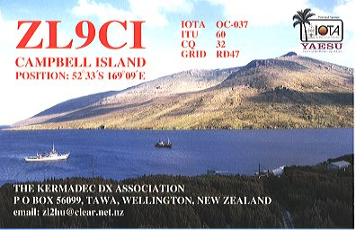

Flash ! DX

 


|
|
|
|

|
|
|
[Back Issues Jul.2017]
TIME:UTC(JST-09:00)
Report from JA1RJU(PM95sq)
31.Jul.2017(15:00b)
No propagation from NA & Europe.(-15:00z)
Report from JA1RJU(PM95sq)
30.Jul.2017(15:00e)
* VP8EME 02:54 50.180 WSJT JT65a EME QSO(JG1TSG=1st ever JA-VP8/F)
DS4EOI 04:41 50.276-1463 WSJT JT65a -01dB CQ EU
DS4EOI 04:49 50.276-1463 WSJT JT65a -07dB CQ EU
UT7QF 06:02 50.276-801 WSJT JT65a -17dB QSO with JA5
UT7QF 06:14 50.276-1766 WSJT JT65a QSO with JA3
SP8SN 06:22 50.276-**** WSJT JT65a QSO with JA7/8
OH3LCH 06:26 50.276-2155 WSJT JT65a QSO with JA0
UT7QF 06:28 50.276-1360 WSJT JT65a -23dB CQ DX(KN77)
OH2ZZ 06:34 50.276-1306 WSJT JT65a QSO with JA1(QM06)
OH2XO 06:42 50.276-1011 WSJT JT65a QSO with JA1
R6KA 06:44 50.276-1202 WSJT JT65a -20dB CQ(KN75)
SM0NKZ 06:44 50.276-**** WSJT JT65a QSO with JA3's
R6KA 06:46 50.276-1199 WSJT JT65a -13dB CQ
DS5EVU 06:49 50.276-606 WSJT JT65a -08dB CQ
SP7QJF 06:54 50.276-1027 WSJT JT65a QSO with JA4
OH2XX 06:56 50.276-1369 WSJT JT65a QSO with JA8
SM0NKZ 06:58 50.276-1573 WSJT JT65a QSO with JA3
LY9Y 06:59 50.276-656 WSJT JT65a into JA1
UN8GC 07:06 50.276-609 WSJT JT65a -16dB QSO with JA3
US5CCO 07:07 50.276-663 WSJT JT65a QSO with JA6
US0ZZ 07:12 50.276-1512 WSJT JT65a QSO with JA7
DS3CHK 07:15 50.276-1681 WSJT JT65a -21dB CQ
SP5CFD 07:18 50.276-1685 WSJT JT65a QSO with JA8
BA4SI 07:27 50.276-2281 WSJT JT65a -15dB CQ EU
UR5WA 07:27 50.276-844 WSJT JT65a QSO with JA8
UX1UA 07:32 50.276-1350 WSJT JT65a QSO with JA6
UT3UA 07:42 50.276-1776 WSJT JT65a -17dB QSO with JA2
UT3UA 07:44 50.276-1776 WSJT JT65a -11dB QSO with JA2
UX1UA 07:46 50.276-821 WSJT JT65a -12dB QSO with JA0
UX1UA 07:48 50.276-831 WSJT JT65a -14dB QSO with JA1(QM06)
SP5CFD 07:52 50.276-1492 WSJT JT65a QSO with JA4
SP5CFD 07:56- 50.276-**** WSJT JT65a QSO with JA4/5/6
BA4SI 08:01 50.276-1910 WSJT JT65a -21dB CQ EU
UR5WA 08:04 50.276-1912 WSJT JT65a QSO with JA4
UT3UA 08:06 50.276-1078 WSJT JT65a QSO with JA3
SP5EPO 09:00 50.276-1077 WSJT JT65a QSO with JA3
PC5C 09:16 50.276-1504 WSJT JT65a QSO with JA3
OH6WW 09:20 50.276-1041 WSJT JT65a QSO with JA3
PC5C 09:20 50.276-1974 WSJT JT65a QSO with JA5
SM5EPO 09:24 50.276-1518 WSJT JT65a QSO with JA1
SP8SN 09:38- 50.276-**** WSJT JT65a QSO with JA4's
PA7MM 09:44 50.276-1022 WSJT JT65a QSO with JA0
SM4CSK 09:46 50.276-1145 WSJT JT65a -24dB CQ(JO79)
SM4CSK 09:56 50.276-1262 WSJT JT65a -21dB QSO with JA1
PA7MM 10:02 50.276-2362 WSJT JT65a QSO with JA7
SM4CSK 10:10 50.276-**** WSJT JT65a QSO with JA1
SM6NOC 10:16 50.276-878 WSJT JT65a QSO with JA6
SM6NOC 10:20- 50.276-**** WSJT JT65a QSO with JA4's
F6BKI 10:32 50.276-742 WSJT JT65a into JA1/0
ON7GB 11:12 50.276-2140 WSJT JT65a -20dB CQ
ON7GB 11:16 50.276-2140 WSJT JT65a -20dB QSO with JA7
ON7GB 11:18 50.276-2139 WSJT JT65a -21dB CQ
Report from JA1RJU(PM95sq)
29.Jul.2017(15:00c)
4O6AH 06:33 50.276-1048 WSJT JT65a -21dB CQ DX(JN92) into JA1(PM95)=Odd
4O6AH 06:35 50.276-1077 WSJT JT65a -24dB CQ DX into JA6=Odd
4O6AH 06:44 50.276-1007 WSJT JT65a -21dB CQ DX into JA7=Odd
(4O6AH 07:06- 50.276-2600 WSJT JT65a CQ JA=Even)
4O6AH 07:16 50.276-2594 WSJT JT65a -21dB CQ DX into JA7=Even
Report from JA1RJU(PM95sq)
28.Jul.2017(15:00b)
No propagation from NA & Europe.(-15:00z)
Report from JA1RJU(PM95sq)
27.Jul.2017(15:00b)
No propagation from NA & Europe.(-15:00z)
Report from JA1RJU(PM95sq)
26.Jul.2017(15:00b)
No propagation from NA & Europe.(-15:00z)
Report from JA1RJU(PM95sq)
25.Jul.2017(15:00d)
9K2GS 04:18 50.276-951 WSJT JT65a -24dB CQ DX(LL39)
9K2GS 04:20 50.276-961 WSJT JT65a -21dB CQ DX(LL39)
9K2GS 04:22 50.276-961 WSJT JT65a -21dB CQ DX(LL39)
9K2GS 04:30 50.276-1289 WSJT JT65a -21dB QSO with JA1
9K2GS 04:34 50.276-850 WSJT JT65a -19dB QSO with JA1
9K2GS 04:40 50.276-1704 WSJT JT65a -22dB CQ DX
9K2GS 04:46 50.276-1702 WSJT JT65a -23dB CQ DX
YL2GJX 06:44 50.276-1550 WSJT JT65a into JA2
UX4UA 06:54 50.276-1659 WSJT JT65a -23dB CQ(KO50)
UT7QF 07:00 50.276-1134 WSJT JT65a -20dB CQ(KN77)
UT9LB 07:04 50.276-1316 WSJT JT65a QSO with JA1
UT9LC 07:24 50.276-2230 WSJT JT65a -12dB QSO with JA7
UT9LC 07:32 50.276-1030 WSJT JT65a -20dB QSO with JA7
UT9LC 07:36 50.276-850 WSJT JT65a -23dB QSO with JA1
UT5UGR 07:38 50.276-1226 WSJT JT65a -18dB QSO with JA2
UT9LC 07:58 50.276-1699 WSJT JT65a -19dB QSO with JA0
UT9LC 08:00 50.276-1699 WSJT JT65a -15dB CQ DX
UT9LC 08:02 50.276-1700 WSJT JT65a -18dB QSO with JA7
OH2XX 08:08 50.276-1723 WSJT JT65a into JA2
OH2XX 08:10 50.276-1723 WSJT JT65a QSO with JA0
LZ2WO 08:20 50.276-1738 WSJT JT65a into JA7
OK2BRD 08:20 50.276-1946 WSJT JT65a into JR6
HL2CFY 08:35 50.276-1199 WSJT JT65a QSO with JA4
BA4SI 08:47 50.276-754 WSJT JT65a -01dB CQ EU
BA4SI 08:59 50.276-556 WSJT JT65a -01dB CQ EU
UT9LC 09:01 50.276-1757 WSJT JT65a into JA4(Odd)
BA4SI 09:03 50.276-556 WSJT JT65a -01dB CQ EU
BH4DKV 09:46 50.276-1872 WSJT JT65a -01dB QSO with JA3
BH4DKV 09:54 50.276-1871 WSJT JT65a -03dB CQ
BA4SI 10:09 50.276-605 WSJT JT65a -01dB CQ EU
BH4DKV 10:12 50.276-1482 WSJT JT65a -01dB CQ
Report from JA1RJU(PM95sq)
24.Jul.2017(15:00d)
HL4CBI 07:16 50.276-1460 WSJT JT65a -01dB QSO with JA7
BA4SI 07:37 50.276-1187 WSJT JT65a -06dB CQ
HL4CBI 08:27 50.276-630 WSJT JT65a -04dB QSO with JA7
BA4SI 08:55 50.276-908 WSJT JT65a -04dB CQ EU
BA4SI 09:23 50.276-907 WSJT JT65a -02dB CQ EU
AP2AM 09:32 50.276-1446 WSJT JT65a -23dB calling to JA2
AP2AM 09:34 50.276-1446 WSJT JT65a -20dB CQ(MM63)
AP2AM 09:36-09:46 50.276-**** WSJT JT65a -22dB QSO with JA2's
AP2AM 09:46 50.276-1463 WSJT JT65a -20dB AP2AM(FT8=50.313)
HL2CFY 09:47 50.276-1156 WSJT JT65a -01dB CQ
AP2AM 09:48 50.276-1156 WSJT JT65a -21dB calling to HL2CFY
HL2CFY 09:51 50.276-1156 WSJT JT65a -01dB CQ(no Ans to AP2)
HL4GKR 09:56 50.276-1146 WSJT JT65a -09dB QSO with HL2CFY
HL2CFY 10:05 50.276-1136 WSJT JT65a -04dB CQ
BA4SI 11:05 50.276-1163 WSJT JT65a -15dB CQ DX
BA4SI 11:25 50.276-1164 WSJT JT65a -12dB CQ
Report from JA1RJU(PM95sq)
23.Jul.2017(15:00d)
BG2ATH 22:36 50.276-2407 WSJT JT65a QSO with JA7
BG2ATH 22:48 50.276-1999 WSJT JT65a CQ
--------------------------------------------------------------------------
IW0FFK 07:44 50.276-1183 WSJT JT65a QSO with JA1
I4EAT 07:46 50.276-1605 WSJT JT65a -13dB CQ AS(JN54)
I4EAT 07:52 50.276-1607 WSJT JT65a -22dB CQ
IK0EOT 08:02 50.276-1309 WSJT JT65a -13dB into JA1
IZ5EME 08:08 50.276-1008 WSJT JT65a QSO with JA1
IK0FTA 08:08 50.276-1916 WSJT JT65a QSO with JA1
T88GA 08:14 50.276-1065 WSJT JT65a -08dB CQ(PJ77)
T88GA 08:16-09:20 50.276-**** WSJT JT65a -01dB QSO with JA1/7/0
R6KA 08:28 50.276-838 WSJT JT65a -24dB CQ DX
IZ5EME 08:30 50.276-2095 WSJT JT65a -24dB QSO with SM0NKZ
T88GA 08:34 50.276-1064 WSJT JT65a -01dB QSO with JA0
T88GA 09:08- 50.276-**** WSJT JT65a -01dB QSO with JA1's
T88GA 09:30- 50.276-1064 WSJT JT65a -01dB QSO with JA1-5/9
Report from JA1RJU(PM95sq)
22.Jul.2017(15:00d)
UR0MC 05:08 50.276-1881 WSJT JT65a -20dB QSO with JA1/5/7
UR0MC 05:22 50.276-1873 WSJT JT65a QSO with JA7
VR2VAZ 05:57 50.276-1601 WSJT JT65a QSO with JA1
UB7K 06:00 50.276-1671 WSJT JT65a -16dB QSO with JA4
SV8CS 06:08 50.276-1804 WSJT JT65a -17dB QSO with JA1
UB7K 06:20 50.276-1518 WSJT JT65a -07dB CQ
US0LW 06:34 50.276-1193 WSJT JT65a -24dB CQ
IK5PWJ 06:42 50.276-2296 WSJT JT65a -18dB/-23dB(QSO)
UB7K 06:46 50.276-1470 WSJT JT65a -22dB CQ(KN85)
IW0FFK 06:48 50.276-995 WSJT JT65a -24dB QSO with JA5
I0JX 06:50 50.276-2257 WSJT JT65a -20dB QSO with JA4
UN7TW 06:50 50.276-995 WSJT JT65a -15dB QSO with JA0
UR1HM 06:56 50.276-609 WSJT JT65a -20dB QSO with JA9
IW0FFK 06:58 50.276-995 WSJT JT65a -15dB/-21dB(QSO)
UN8GC 06:59 50.276-1165 WSJT JT65a -09dB QSO with JA7
IK0FTA 07:02 50.276-1407 WSJT JT65a -19dB CQ(JN61)
UT1US 07:04 50.276-1194 WSJT JT65a -18dB CQ(KO50)
EX8MLT 07:04 50.276-1437 WSJT JT65a -19dB QSO with JA7
US0LW 07:04 50.276-717 WSJT JT65a -22dB CQ
UN6T 07:06 50.276-1181 WSJT JT65a -20dB QSO with JA1
I0JX 07:06 50.276-1848 WSJT JT65a -22dB QSO with JA4
JT1BU 07:08 50.276-931 WSJT JT65a -01dB CQ(ON37)
UT7UJ 07:10 50.276-1733 WSJT JT65a -21dB QSO with JA9
UT7US 07:12 50.276-1814 WSJT JT65a -18dB QSO with JA3
UT9FJ 07:12 50.276-892 WSJT JT65a -21dB CQ
HL2CFY 07:17 50.276-1266 WSJT JT65a -11dB CQ(PM36)
IK5PWJ 07:18 50.276-2273 WSJT JT65a -23dB CQ(JN53)
4O6AH 07:22 50.276-2282 WSJT JT65a -16dB QSO with JA4/5
4O6AH 07:26 50.276-2281 WSJT JT65a -11dB QSO with JA1
4O6AH 07:26-07:50 50.276-**** WSJT JT65a -11dB calling with JA1/3/4
YO9HP 07:32 50.276-811 WSJT JT65a -20dB CQ DX(KN35)
YO6BHN 07:38 50.276-1569 WSJT JT65a -19dB QSO with JA1
UY7VV 07:42 50.276-1232 WSJT JT65a -19dB QSO with JA0
UY7VV 07:50 50.276-436 WSJT JT65a -21dB CQ DX
UT7UJ 08:00 50.276-1733 WSJT JT65a -19dB QSO with JA1
UT7QF 08:02 50.276-1924 WSJT JT65a -16dB QSO with UT5IA
BG2ATH 08:12 50.276-1587 WSJT JT65a -01dB QSO with JA1
BG3ATI 09:15 50.276-245 WSJT JT65a -01dB QSO with JA1
BA4SI 09:21 50.276-1868 WSJT JT65a -22dB CQ EU
BG2ATH 09:24 50.276-1575 WSJT JT65a -01dB CQ
DS4EOI 09:45 50.276-1450 WSJT JT65a -11dB CQ EU
BG2ATH 09:46 50.276-2158 WSJT JT65a -01dB CQ
JT1BU 10:54 50.276-1045 WSJT JT65a -01dB CQ
JT1BU 10:54-11:03 50.276-**** WSJT JT65a -01dB QSO with JA1-4/7-0
HL2CFY 11:17 50.276-1281 WSJT JT65a -01dB CQ(PM36)
DS4EOI 11:17 50.276-1452 WSJT JT65a -01dB CQ EU
BG2ATH 11:36 50.276-999 WSJT JT65a -15dB CQ
EX8MLT 11:36 50.276-1434 WSJT JT65a -08dB CQ(MN72)
EX8MLT 11:40 50.276-1434 WSJT JT65a -21dB CQ
BG2ATH 12:40 50.276-1327 WSJT JT65a -01dB CQ
Report from JA1RJU(PM95sq)
21.Jul.2017(15:00c)
UT9FJ 07:41 50.276-614 WSJT JT65a into JA1/7/0(Odd)
UY7VV 07:49 50.276-804 WSJT JT65a into JA1/3/7(Odd)
UT4EX 07:56 50.276-1988 WSJT JT65a -21dB CQ(KN77)
UY7VV 07:49-08:05 50.276-**** WSJT JT65a QSO with JA1(Odd)
UY7VV 08:02 50.276-872 WSJT JT65a -02dB QSO with JA1
UX2SB 08:02 50.276-1869 WSJT JT65a into JA1
UR5ZW 08:04 50.276-1554 WSJT JT65a into JA7
UN5UGR 08:06 50.276-1151 WSJT JT65a -19dB QSO with JA7
US5UC 08:08 50.276-487 WSJT JT65a -16dB CQ(KN59)
UR5LCV 08:11 50.276-1406 WSJT JT65a into JA1(Odd)
UT5UGR 08:14 50.276-1145 WSJT JT65a -19dB QSO with JA1
UX2SB 08:16 50.276-2244 WSJT JT65a into JA7
UT5UGR 08:18 50.276-1144 WSJT JT65a -16dB CQ(KO50)
UT5UGR 08:20 50.276-1144 WSJT JT65a -11dB CQ
UX4UA 08:24 50.276-2244 WSJT JT65a -19dB CQ(KO50)
UT5UGR 08:24 50.276-1144 WSJT JT65a -11dB/-12dB(QSO)
UT7QF 08:24 50.276-2244 WSJT JT65a -14dB QSO with JA7
UT4EX 08:26 50.276-1993 WSJT JT65a -19dB QSO with JA1
YO9HP 08:32 50.276-582 WSJT JT65a QSO with JA7
UT7QF 08:42 50.276-672 WSJT JT65a -19dB QSQ with JA9
UT5UGR 08:50 50.276-1140 WSJT JT65a -17dB CQ
UX4UA 08:54 50.276-1916 WSJT JT65a -20dB QRZ?
US5WE 08:58 50.276-1053 WSJT JT65a -13dB CQ(KN29)
UT5UGR 09:02 50.276-1139 WSJT JT65a -19dB CQ
UX4UA 09:02 50.276-1917 WSJT JT65a -20dB CQ
UT4XU 09:10 50.276-1671 WSJT JT65a -24dB CQ(KO40)
UT4XU 09:12 50.276-1674 WSJT JT65a -24dB/-11dB(QSO)
US5WE 09:16 50.276-1053 WSJT JT65a -17dB CQ
UT5UGR 09:18 50.276-1142 WSJT JT65a -04dB CQ
HA8CE 09:18 50.276-1471 WSJT JT65a -24dB CQ
UX4UA 09:18 50.276-1921 WSJT JT65a -09dB CQ(KO50)
UT5UGR 09:20 50.276-1142 WSJT JT65a -06dB CQ
US0LW 09:30 50.276-1812 WSJT JT65a -14dB/-07dB(QSO)
YO9HP 09:36 50.276-571 WSJT JT65a -25dB CQ DX
S59A 09:40 50.276-1159 WSJT JT65a -23dB CQ
US5WE 09:44 50.276-992 WSJT JT65a -17dB/-24dB(QSO)
UZ5DX 09:50 50.276-1323 WSJT JT65a -23dB CQ(KN18)
YO9HP 09:56 50.276-2141 WSJT JT65a -21dB CQ(KN36)
UX2SB 10:06 50.276-1881 WSJT JT65a -20dB CQ(KN28)
HA8CE 10:06 50.276-1142 WSJT JT65a -24dB QSO with JA7
UZ5DX 10:10 50.276-1312 WSJT JT65a -20dB/-22dB(QSO)
HA8CE 10:10 50.276-1142 WSJT JT65a -23dB CQ DX
S59A 10:10 50.276-1662 WSJT JT65a -01dB QSO with JA1
HA8CE 10:14 50.276-832 WSJT JT65a -18dB QSO with JA1
UX2SB 10:14 50.276-1881 WSJT JT65a -18dB/-01dB(QSO)
S59A 10:18 50.276-1658 WSJT JT65a -01dB QSO with JA1
US5WE 10:22 50.276-1038 WSJT JT65a -10dB QSO with JA3
S59A 10:24 50.276-1657 WSJT JT65a -19dB CQ
UZ5DX 10:26 50.276-1294 WSJT JT65a -22dB CQ DX(KN18)
S59A 10:28 50.276-1659 WSJT JT65a -14dB CQ(JN76)
S59A 10:36 50.276-1660 WSJT JT65a -07dB QSO with JA1
DS4EOI 10:57 50.276-1438 WSJT JT65a -17dB CQ EU
Report from JA1RJU(PM95sq)
20.Jul.2017(15:00b)
DS4EOI 08:07 50.276-1442 WSJT JT65a -07dB CQ EU
DS4EOI 08:39 50.276-1442 WSJT JT65a -14dB CQ EU
BA4SI 09:05 50.276-887 WSJT JT65a -19dB CQ
Report from JA1RJU(PM95sq)
19.Jul.2017(15:00c)
UN7TW 05:42 50.276-293 WSJT JT65a -14dB QSO with JA3
UB7K 05:42 50.276-1663 WSJT JT65a -17dB CQ
UB7K 05:44 50.276-1661 WSJT JT65a -14dB CQ
UN7TW 05:48 50.276-1558 WSJT JT65a -12dB QSO with JA1
UB7K 05:48 50.276-1656 WSJT JT65a -12dB QSO with JA4
UN7TW 05:50 50.276-1472 WSJT JT65a -12dB QSO with JA2
UB7K 05:52 50.276-1653 WSJT JT65a -09dB QSO with JA2
UB7K 06:04 50.276-1647 WSJT JT65a -08dB QSO with JA4
UN7TW 06:12 50.276-2282 WSJT JT65a -06dB QSO with JA2
UN6T 06:26 50.276-1998 WSJT JT65a -02dB CQ(MN52)
UN7TW 06:30 50.276-1873 WSJT JT65a -13dB CQ
UN8GC 06:32 50.276-1019 WSJT JT65a -01dB QSO with JA1
R7KR 06:33 50.276-1019 WSJT JT65a QSO with JA9(Odd)
UN6T 06:36 50.276-1437 WSJT JT65a -05dB CQ(MN52)
UN8GC 06:36 50.276-1547 WSJT JT65a -07dB CQ(MN83)
HL2ADY 06:40 50.276-2268 WSJT JT65a -07dB QSO with JA7
UB7K 06:40 50.276-1679 WSJT JT65a -18dB CQ
UN6T 06:48 50.276-1437 WSJT JT65a -02dB CQ
R7KR 07:12 50.276-1691 WSJT JT65a -15dB CQ
UT7QF 07:18 50.276-2049 WSJT JT65a into JA1
R7KR 07:22 50.276-1314 WSJT JT65a -22dB CQ
UB7K 07:36 50.276-1688 WSJT JT65a -13dB QSO with JA9
LZ2WO 07:52 50.276-1929 WSJT JT65a QSO with JA2
LZ2WO 07:53-08:01 50.276-**** WSJT JT65a into JA2
VU2NKS 08:01-08:07 50.276-**** WSJT JT65a into JA7
DS3CHK 08:49 50.276-870 WSJT JT65a -10dB CQ DX
DS4EOI 08:55 50.276-1438 WSJT JT65a -14dB CQ EU
F5BZB 09:10 50.276-**** WSJT JT65a into JA1/7/0
US5WE 09:10 50.276-2267 WSJT JT65a into JA7
F5BZB 09:26-10:18 50.276-**** WSJT JT65a QSO with JA1/0
F5BZB 10:20 50.276-1061 WSJT JT65a -19dB QSO with JA1
F5BZB 09:22-10:25 50.276-**** WSJT JT65a QSO with JA1/7(21JA's)
HB9BIN 10:22 50.276-609 WSJT JT65a into JA1
SM5CUI 10:24 50.276-1873 WSJT JT65a into JA0
F4ENK 10:26 50.276-1332 WSJT JT65a into JA1
F4ENK 10:32 50.276-1893 WSJT JT65a into JA0
LX1JX 10:38-10:42 50.276-**** WSJT JT65a into JA1
LX1JX 10:42 50.276-836 WSJT JT65a QSO with JA1
DL1YM 10:44 50.276-2236 WSJT JT65a into JA1
HB9BIN 10:48 50.276-1343 WSJT JT65a into JA1
ON7GB 10:50 50.276-2143 WSJT JT65a into JA0
F5LNU 10:50 50.276-1243 WSJT JT65a into JA1
F5LNU 10:54 50.276-1243 WSJT JT65a QSO with JA1
ON7GB 10:54 50.276-2142 WSJT JT65a into JA7
ON7GB 11:00 50.276-**** WSJT JT65a into JA1
G3WOS 11:14 50.276-2510 WSJT JT65a into JA0
G3WOS 11:16 50.276-242 WSJT JT65a into JA9
F4ENK 11:18 50.276-2510 WSJT JT65a into JA0
M0DHO 11:20 50.276-242 WSJT JT65a into JA9
G3WOS 11:20 50.276-658 WSJT JT65a into JA2
M0DHO 11:22 50.276-1743 WSJT JT65a into JA9
G3WOS 11:24 50.276-847 WSJT JT65a into JA9
F1EBN 11:28 50.276-1744 WSJT JT65a into JA9
BG2ATH 11:30 50.276-1240 WSJT JT65a -01dB QSO with JA1
F4ENK 11:30 50.276-1090 WSJT JT65a into JA0
G3WOS 11:32 50.276-855 WSJT JT65a into JA9
PA2M 11:32 50.276-2513 WSJT JT65a into JA0
BG2ATH 11:36 50.276-1241 WSJT JT65a -01dB QSO with JA1
DS4EOI 11:36 50.276-1442 WSJT JT65a -13dB CQ EU
PA2M 11:34 50.276-2514 WSJT JT65a into JA0
BG2ATH 11:38 50.276-1744 WSJT JT65a -16dB into JA1
Report from JA1RJU(PM95sq)
18.Jul.2017(15:00c)
BH3PTL 06:56 50.276-1216 WSJT JT65a -08dB CQ(OM99)
EK7DX 06:56 50.276-1384 WSJT JT65a -21dB QSO with UN6T
EK7DX 06:58 50.276-1384 WSJT JT65a -22dB CQ DX(LN20)
EK7DX 07:02 50.276-1384 WSJT JT65a -16dB QSO with JA4
EK7DX 07:04 50.276-1384 WSJT JT65a -21dB/-20dB(QSO)
EK7DX 07:08 50.276-1385 WSJT JT65a -20dB QSO with EA3NT
EK7DX 07:12 50.276-1384 WSJT JT65a -21dB CQ DX
EK7DX 07:14 50.276-1384 WSJT JT65a -23dB QSO with UT4UF
UN7TW 07:24 50.276-1383 WSJT JT65a -16dB QSO with EK7DX
UN6T 07:24 50.276-552 WSJT JT65a -17dB CQ(MN52)
UT1US 07:26 50.276-2082 WSJT JT65a -17dB QSO with JA7
BG3ATI 07:29 50.276-338 WSJT JT65a -05dB QSO with UX4UA
UT1US 07:32 50.276-2086 WSJT JT65a -13dB QSO with JA3
UT1US 07:36 50.276-1397 WSJT JT65a -10dB QSO with JA7
UT5UGR 07:42 50.276-1664 WSJT JT65a -14dB QSO with BG3ATI
UX4UA 07:42 50.276-2229 WSJT JT65a -19dB QSO with JA3
UT5UGR 07:46 50.276-1664 WSJT JT65a -20dB CQ(KO50)
UX4UA 07:46 50.276-2232 WSJT JT65a -24dB CQ(KO50)
EK7DX 07:58 50.276-1588 WSJT JT65a into JA3
BG3ITB 08:21 50.276-1329 WSJT JT65a -05dB QSO with JA1
UB7K 08:32 50.276-1640 WSJT JT65a -12dB CQ
SP5GMM 08:42 50.276-**** WSJT JT65a -17dB QSO with JA3-6/9
UB7K 08:44 50.276-**** WSJT JT65a QSO with JA1/7
SP8AWL 08:44 50.276-**** WSJT JT65a QSO with JA6
SP5GMM 08:50 50.276-1660 WSJT JT65a -19dB QSO with JA9
R7KR 08:52 50.276-1998 WSJT JT65a into JA4
SP5GMM 08:56 50.276-1661 WSJT JT65a -18dB QSO with JA1
R7KR 08:56 50.276-2047 WSJT JT65a -21dB QSO with JA2
UB7K 08:58 50.276-1670 WSJT JT65a -14dB QSO with JA2
SP5GMM 08:58 50.276-1662 WSJT JT65a -19dB QSO with JA1
UB7K 09:00 50.276-1671 WSJT JT65a -09dB QSO with JA9
R7KR 09:04 50.276-2047 WSJT JT65a -21dB/-16dB(QSO)
R7KR 09:08 50.276-2033 WSJT JT65a -17dB CQ(KN65)
UB7K 09:14 50.276-**** WSJT JT65a -09dB QSO with JA1/3/9
UT4EX 09:18 50.276-2235 WSJT JT65a -12dB QSO with JA2
R7KR 09:26 50.276-**** WSJT JT65a -08dB QSO with JA1-4/7
UY5QZ 09:26 50.276-1054 WSJT JT65a -17dB QSO with JA1
R7KR 09:28 50.276-2046 WSJT JT65a -06dB QSO with JA1
UB7K 09:30 50.276-1670 WSJT JT65a -10dB QSO with JA4
UT4EX 09:30 50.276-1584 WSJT JT65a -05dB QSO with JA2
UB7K 09:30 50.276-1670 WSJT JT65a -10dB QSO with JA4
UT8IO 09:32 50.276-1483 WSJT JT65a -04dB QSO with HL2CFY
UB7K 09:32 50.276-1670 WSJT JT65a -10dB QSO with JA1
R7KR 09:32 50.276-2035 WSJT JT65a -09dB QSO with JA7
UT4EX 09:32 50.276-2242 WSJT JT65a -13dB QSO with JA1
UB7K 09:34 50.276-1670 WSJT JT65a -13dB QSO with JA1
R7KR 09:34 50.276-2044 WSJT JT65a -11dB QSO with JA1
UT9FJ 09:36 50.276-1117 WSJT JT65a -20dB QSO with JA9
UB7K 09:36 50.276-1669 WSJT JT65a -09dB QSO with JA2
UT9FJ 09:38 50.276-1116 WSJT JT65a -20dB CQ
R7KR 09:38 50.276-2042 WSJT JT65a -14dB QSO with JA1
UB7K 09:38 50.276-1669 WSJT JT65a -21dB QSO with JA1
UT9FJ 09:40 50.276-1116 WSJT JT65a -11dB QSO with JA2
UB7K 09:42 50.276-1671 WSJT JT65a -06dB QSO with JA9
BA4SI 09:49 50.276-658 WSJT JT65a -12dB CQ
UB7K 09:50 50.276-1673 WSJT JT65a -16dB QSO with JA4
UB7K 09:52 50.276-1673 WSJT JT65a -20dB QSO with HL4GHT
UB7K 09:56 50.276-1672 WSJT JT65a -21dB QSO with JA3
UW1HM 09:56 50.276-2392 WSJT JT65a -17dB CQ(KN69)
UT5UGR 09:57 50.276-1133 WSJT JT65a -05dB CQ
UT4EX 09:58 50.276-1877 WSJT JT65a -09dB CQ
UR0MC 10:02 50.276-510 WSJT JT65a -02dB CQ DX(KN99)
HL2CFY 10:02 50.276-1137 WSJT JT65a -01dB QSO with UT5UGR
UT4EX 10:02 50.276-1586 WSJT JT65a -05dB/-10dB(QSO)
UT4EX 10:06 50.276-889 WSJT JT65a -14dB QSO with JA1
UB7K 10:06 50.276-1671 WSJT JT65a -18dB QSO with JA3
UR0MC 10:08 50.276-510 WSJT JT65a -12dB QSO with JA1
R7KR 10:08 50.276-979 WSJT JT65a -19dB QSO with JA3
UB7K 10:08 50.276-1671 WSJT JT65a -13dB QSO with JA2
UY7VV 10:12 50.276-307 WSJT JT65a -13dB CQ DX(KN58)
UR0MC 10:12 50.276-511 WSJT JT65a -19dB CQ DX
UW1HM 10:12 50.276-2388 WSJT JT65a -17dB CQ DX
R7KR 10:14 50.276-1088 WSJT JT65a -21dB QSO with JA2
UB7K 10:18 50.276-1672 WSJT JT65a -22dB CQ(KN85)
UT8IO 10:22 50.276-1673 WSJT JT65a -13dB QSO with JA3
UT8IO 10:24 50.276-1499 WSJT JT65a -16dB QSO with JA1
HL2CFY 10:29 50.276-664 WSJT JT65a -16dB CQ
DS4EOI 10:29 50.276-1437 WSJT JT65a -14dB CQ EU
BA4SI 10:55 50.276-594 WSJT JT65a -15dB CQ EU
Report from JA1RJU(PM95sq)
17.Jul.2017(15:00b)
BV2LA 06:08 50.276-1388 WSJT JT65a QSO with JA2
BV2LA 07:49 50.276-1639 WSJT JT65a QSO with JA3
Report from JA1RJU(PM95sq)
16.Jul.2017(15:00c)
KL7HBK 00:14 50.276-1372 WSJT JT65a -11dB QSO with JA2
KL7HBK 00:16 50.276-1373 WSJT JT65a -18dB CQ
JT1CO 00:24 50.097 CW CQ
JT5DX 00:26 50.097 CW CQ TEST(WW VHF Test)
BY5BAA 00:41 50.095 CW CQ TEST(WW VHF Test)
JT5DX 02:24 50.105 CW CQ TEST
JT5DX 03:10 50.105 CW CQ TEST
9K2GS 05:32 50.276-1756 WSJT JT65a QSO with BH4TVU
EA7HG 07:46 50.276-1186 WSJT JT65a -19dB QSO with JA1
BG1NAL 07:58 50.276-1347 WSJT JT65a -06dB QSO with JA1
HL5BRP 08:36 50.276-1315 WSJT JT65a -01dB QSO with JA1
BH4DKV 08:48 50.276-1890 WSJT JT65a -15dB QSO with JA1
BH4DKV 09:00 50.276-2085 WSJT JT65a -17dB QSO with JA7
HL5BRP 09:15 50.276-1226 WSJT JT65a -11dB CQ
Report from JA1RJU(PM95sq)
15.Jul.2017(15:00c)
JT1BU 03:44 50.276-643 WSJT JT65a -01dB QSO with JA3
JT1BU 03:48 50.276-**** WSJT JT65a -01dB QSO with JA1-4/JA7/JA0
JT1BU 04:16 50.276-442 WSJT JT65a -01dB CQ(ON37)
BG2KAJ 04:40 50.276-931 WSJT JT65a QSO with JA3
UN8GC 05:42 50.276-1018 WSJT JT65a -09dB QSO with JA8
JT1BU 05:44 50.276-439 WSJT JT65a -01dB QSO with JA1
UN8GC 06:00 50.276-1019 WSJT JT65a -10dB CQ(MN83)
UN8GC 06:04 50.276-1020 WSJT JT65a -10dB/-11dB(QSO)
UN6T 06:18 50.276-1266 WSJT JT65a QSO with JA7
I6WJB 06:28 50.276-1137 WSJT JT65a QSO with JA2
HA8FK 06:40 50.276-897 WSJT JT65a QSO with JA2
(TY2AC 07:15 50.276- WSJT JT65a JA7→into TY＝Benin）
S55N 07:16 50.276-1766 WSJT JT65a QSO with JA3
S57TW 07:32 50.276-1161 WSJT JT65a -23dB QSO with JA1
S58J 07:31 50.276-922 WSJT JT65a QSO with JA5
JT5DX 07:35 50.104 CW CQ RST559/599 QSB
JT5DX 07:53 50.104 CW CQ RST599/599(QSO)
S57RR 07:56 50.276-550 WSJT JT65a -19dB QSO with JA1
S57TW 07:56 50.276-1770 WSJT JT65a -21dB CQ(JN75)
ON4GB 08:14 50.276-548 WSJT JT65a -19dB QSO with JA1
S57RR 08:42 50.276-735 WSJT JT65a -20dB QSO with JA1
S57RR 08:44 50.276-735 WSJT JT65a -18dB CQ
S57TW 08:44 50.276-2267 WSJT JT65a -19dB QSO with JA2
S58N 08:48 50.276-974 WSJT JT65a -18dB QSO with JA2
S57TW 08:48 50.276-1319 WSJT JT65a -16dB CQ
S57TW 09:00 50.276-1320 WSJT JT65a -15dB QSO with JA1
S57TW 09:02 50.276-1320 WSJT JT65a -15dB/-20dB(QSO)
S57RR 09:08 50.276-997 WSJT JT65a -11dB QSO with JA1
S57RR 09:10 50.276-998 WSJT JT65a -11dB CQ DX
JT1BU 09:10 50.276-816 WSJT JT65a -16dB CQ
JT1BU 09:12 50.276-816 WSJT JT65a -12dB QSO with JA3
S57RR 09:14 50.276-999 WSJT JT65a -14dB CQ DX
S57RR 09:16 50.276-999 WSJT JT65a -16dB CQ DX
S57RR 09:18 50.276-999 WSJT JT65a -22dB CQ DX
Report from JA1RJU(PM95sq)
14.Jul.2017(15:00b)
BH3PTL 03:06 50.276-1224 WSJT JT65a -12dB CQ DX
BH3PTL 03:10 50.276-1224 WSJT JT65a -04dB CQ DX
BH3PTL 07:38 50.276-1649 WSJT JT65a into JA1
Report from JA1RJU(PM95sq)
13.Jul.2017(15:00c)
DS4EOI 06:49 50.276-1430 WSJT JT65a -21dB CQ EU
DS4EOI 06:59 50.276-1427 WSJT JT65a -21dB CQ EU
DS3CHK 08:42 50.276-1525 WSJT JT65a -03dB JA7 call
9M2TO 09:04 50.276-896 WSJT JT65a QSO with JA2
DS4AOM 09:15 50.276-1093 WSJT JT65a -01dB QSO with JA4
9M2TO 09:20 50.276-534 WSJT JT65a -18dB CQ
9M2TO 09:26 50.276-536 WSJT JT65a -15dB/-10dB(QSO)
9M2TO 09:28-09:54 50.276-**** WSJT JT65a -15dB QSO with JA1/2-JR6/JA0
9M2TO 10:39 50.276-510 WSJT JT65a -23dB CQ
Report from JA1RJU(PM95sq)
12.Jul.2017(15:00c)
NH6Y 00:39 50.276-797 WSJT JT65a into JA1/2/3
NH6Y 00:41 50.276-1444 WSJT JT65a QSO with JA2
NH6Y 00:44-00:52 50.276-**** WSJT JT65a into JA1/2/3
N6EQ 00:54 50.276-826 WSJT JT65a into JA3
N5OR 01:26 50.276-1846 WSJT JT65a QSO with JA7
N5OR 01:34 50.276-1166 WSJT JT65a QSO with JA3
N5OR 01:34-01:38 50.276-**** WSJT JT65a into JA3/4/5
W7FI 01:38 50.276-1846 WSJT JT65a into JA7
N5OR 01:40 50.276-1421 WSJT JT65a QSO with JA5
W7FI 01:44 50.276-2112 WSJT JT65a QSO with JA3
N5OR 01:50 50.276-358 WSJT JT65a QSO with JA4
W7FI 01:54 50.276-**** WSJT JT65a into JA3/0
N7BT 02:12 50.276-1850 WSJT JT65a into JA7
W7MEM 02:20 50.276-1849 WSJT JT65a QSO with JA7
W7MEM 02:24 50.276-**** WSJT JT65a into JA1/3
N7BT 02:24 50.276-2221 WSJT JT65a into JA5
W7MEM 02:26 50.276-1008 WSJT JT65a QSO with JA3
DU7/PA0HIP 07:23 50.276-1619 WSJT JT65a -23dB CQ
DU7/PA0HIP 07:35 50.276-1079 WSJT JT65a -20dB CQ
4O6AH 07:45 50.276-1063 WSJT JT65a -18dB CQ AS(JN92)=Odd
Report from JA1RJU(PM95sq)
11.Jul.2017(15:00d)
BA4SI 23:25 50.276-952 WSJT JT65a -01dB CQ NA
---------------------------------------------------------------------------
NH6Y 00:18 50.276-1675 WSJT JT65a QSO with JA7
BA4SI 00:41 50.276-950 WSJT JT65a -01dB CQ NA
BD7OH 04:58 50.276-1482 WSJT JT65a into JA1
JT1BU 07:10 50.276-676 WSJT JT65a -01dB QSO with JA2
JT1BU 07:10-07:54 50.276-**** WSJT JT65a QSO with JA1-5/JA9-0
UN8GC 07:53 50.276-1563 WSJT JT65a QSO with JA2
UN8GC 07:56 50.276-1309 WSJT JT65a -16dB CQ(MN83)
JT1BU 07:54-08:16 50.276-**** WSJT JT65a QSO with JA1-4/JA7-0
UB7K 08:16 50.276-1809 WSJT JT65a into JA1
UN8GC 08:16-08:18 50.276-**** WSJT JT65a QSO with JA1/7/0
UN8GC 08:20 50.276-1305 WSJT JT65a -15dB CQ
UN8GC 08:22-08:38 50.276-**** WSJT JT65a -15dB QSO with JA1/7/0
BH3PTL 09:00 50.276-1545 WSJT JT65a -01dB CQ
DS4EOI 09:03 50.276-1418 WSJT JT65a -02dB CQ EU
BH3PTL 09:04 50.276-1545 WSJT JT65a -01dB CQ DX
BA4SI 09:29 50.276-2274 WSJT JT65a -04dB CQ EU
SV5/SV1LK 10:23 50.276-1592 WSJT JT65a into JA3
SV9CVY 10:28 50.276-1592 WSJT JT65a into JA3
SV9CVY 10:30 50.276-1592 WSJT JT65a QSO with JA3
BA4SI 10:45 50.276-2266 WSJT JT65a -01dB CQ EU
BA4SI 11:01 50.276-2270 WSJT JT65a -11dB CQ EU


今季WSJT(JT65a)でアクティブにQRVしたAP2AMとG4FUF
Report from JA1RJU(PM95sq)
10.Jul.2017(15:00c)
BA4SI 23:57 50.276-830 WSJT JT65a -21dB CQ NA
---------------------------------------------------------------------------
BA4SI 00:01 50.276-934 WSJT JT65a -05dB CQ NA
BA4SI 00:13 50.276-831 WSJT JT65a -04dB CQ NA
BA4SI 00:39 50.276-834 WSJT JT65a -24dB CQ NA
SV1JAO 06:56 50.276-1707 WSJT JT65a into JI6
BG3PJT 07:16 50.276-1242 WSJT JT65a -21dB CQ DX
DU7/PA0HIP 07:22 50.276-386 WSJT JT65a -09dB CQ
SV1JAO 07:38 50.276-1012 WSJT JT65a into JA1
DU7/PA0HIP 08:00 50.276-1891 WSJT JT65a -05dB CQ
BA4SI 08:13 50.276-942 WSJT JT65a -20dB CQ
SV9CVY 08:34 50.276-1604 WSJT JT65a -23dB QSO with JA1
SV5DRL 08:46 50.276-2370 WSJT JT65a QSO with JA7
SV5DRL 08:48 50.276-2370 WSJT JT65a QSO with JA7
SV1NZX 08:52-54 50.276-2017 WSJT JT65a -18dB QSO with JA1
SV5DRL 08:52-54 50.276-694 WSJT JT65a QSO with JA7
SV5DRL 09:08-14 50.276-1381 WSJT JT65a -24dB QSO with JA1
SV5DRL 09:14-24 50.276-1152 WSJT JT65a into JA1
DU7/PA0HIP 09:29 50.276-1356 WSJT JT65a -16dB CQ
SV5DRL 09:50 50.276-1378 WSJT JT65a into JA2
DU7/PA0HIP 09:50 50.276-1808 WSJT JT65a -17dB CQ
SV5DRL 09:56 50.276-1377 WSJT JT65a into JA1
SV1NZX 09:56 50.276-1593 WSJT JT65a into JA2
SV5DRL 10:02 50.276-1375 WSJT JT65a -22dB CQ DX
SV5DRL 10:10 50.276-1374 WSJT JT65a -24dB QSO with JA9
M0NPT 10:28 50.276-2060 WSJT JT65a into JA9
M0NPT 10:34 50.276-2064 WSJT JT65a into JA6
M0NPT 10:38-10:50 50.276-**** WSJT JT65a into JA3/4/6
Report from JA1RJU(PM95sq)
09.Jul.2017(15:00c)
N6RMJ 22:32 50.276-1555 WSJT JT65a into JA7
---------------------------------------------------------------------------
N6RMJ 00:02 50.276-2228 WSJT JT65a into BA4SI
N6RMJ 00:12 50.276-983 WSJT JT65a into BA4SI
NJ6P 00:14 50.276-935 WSJT JT65a into BA4SI
BA4SI 00:21 50.276-934 WSJT JT65a -03dB CQ NA
BA4SI 00:49 50.276-936 WSJT JT65a -01dB CQ NA
BD7OH 01:35 50.276-1013 WSJT JT65a -14dB CQ(OL72)
BI7LER 02:33 50.276-1120 WSJT JT65a QSO with JA1
BI7LER 02:40 50.276-1610 WSJT JT65a CQ
BG3ATI 02:48 50.276-1605 WSJT JT65a QSO with JA1
BI7LER 02:54 50.276-1745 WSJT JT65a CQ
XW4XR 02:55 50.276-**** WSJT JT65a -14dB QSO with JA1/3/5
XW4XR 03:08 50.276-1285 WSJT JT65a -14dB QSO with JA3/5
XW4XR 03:10 50.102 CW QSY to CW
XW4XR 03:17 50.102 CW QSO(RST599/599) UP+1
DS3CHK 03:31 50.276-1660 WSJT JT65a CQ
BI7LER 03:34 50.276-641 WSJT JT65a CQ
BI7LER 03:36 50.276-1110 WSJT JT65a into JA2
BI7LER 03:44 50.276-635 WSJT JT65a -24dB/-18dB(QSO)
BG4IHP 03:48 50.276-899 WSJT JT65a QSO with JA4
BG8NKX 03:50 50.276-1782 WSJT JT65a QSO with JA1
BG8IXQ 03:50 50.276-2043 WSJT JT65a QSO with JA0
KG6DX 03:55 50.276-1765 WSJT JT65a -15dB CQ
KG6DX 04:01 50.276-1764 WSJT JT65a -25dB QSO with JA1
BG3MN 05:31-05:44 50.276-**** WSJT JT65a QSO with JA1/2
4X4DK 05:58- 50.276-1883 WSJT JT65a QSO with JA4
4X4DK 06:10-06:21 50.276-**** WSJT JT65a QSO with JA2/3/4/5/6
IZ3NOC 06:23 50.276-1541 WSJT JT65a into JA1
BA4SI 08:27 50.276-2274 WSJT JT65a -19dB CQ EU
Report from JA1RJU(PM95sq)
08.Jul.2017(15:00c)
BA4SI 00:19 50.276-971 WSJT JT65a -03dB CQ NA
BD7OH 00:20 50.276-803 WSJT JT65a QSO with JA7
BA4SI 00:47 50.276-962 WSJT JT65a -06dB CQ NA
BG6CJR 01:23 50.276-1611 WSJT JT65a -10dB CQ NA
HL2CFY 01:43 50.276-1211 WSJT JT65a -23dB CQ
BD7OH 01:46 50.276-1218 WSJT JT65a -11dB QSO with JA1
BH5HAI 02:00 50.276-1934 WSJT JT65a -01dB QSO with JA1
NH6Y 02:45 50.276-**** WSJT JT65a intoJA1/7/0
EX9T 03:30 50.096 CW into JA6/0
XW1IC 04:26 50.102 CW intoJA6
9M2TO 04:44 50.276-1788 WSJT JT65a QSO with JA8
AP2AM 04:56 50.276-879 WSJT JT65a intoJA8
4X4DX 04:58 50.276-920 WSJT JT65a -25dB CQ Asia
4X4DX 05:00 50.276-922 WSJT JT65a -18dB CQ Asia
4X4DX 05:10 50.276-927 WSJT JT65a -20dB CQ Asia
BD4DRL 05:24 50.276-1524 WSJT JT65a -06dB CQ
A92GE 05:30 50.276-2074 WSJT JT65a into JA8
A92GE 05:32-05:42 50.276-2074 WSJT JT65a into JA8
A92GE 06:12 50.276-2344 WSJT JT65a into JA7
VU2NKS 08:24 50.276-1265 WSJT JT65a into JA9
DS4EOI 09:23 50.276-1413 WSJT JT65a -14dB CQ EU
Report from JA1RJU(PM95sq)
07.Jul.2017(15:00c)
BA4SI 23:29 50.276-884 WSJT JT65a -01dB CQ
----------------------------------------------------------------
BA4SI 00:27 50.276-884 WSJT JT65a -01dB CQ
BA4SI 00:27 50.276-884 WSJT JT65a -01dB CQ
NH6Y 00:28 50.276-1431 WSJT JT65a intoJA1
HL4RBR 00:35 50.276-1035 WSJT JT65a -14dB CQ
BG2ATH 00:52 50.276-1490 WSJT JT65a -01dB QSO with HL4RBR
VU2ABS 03:44 50.276-1833 WSJT JT65a into JA1
VU2ABS 03:47 50.276-1833 WSJT JT65a into JA1
UN6T 03:57 50.276-483 WSJT JT65a into JA1/JA4
AP2AM 04:02 50.276-960 WSJT JT65a -12dB QSO with BH4IGO
AP2AM 04:04 50.276-**** WSJT JT65a into JA1/2/3/
AP2AM 04:08 50.276-737 WSJT JT65a -15dB QSO with JA1
AP2AM 04:10-04:18 50.276-**** WSJT JT65a -15dB QSO with JA1/2/3/4/7
AP2AM 04:20 50.276-906 WSJT JT65a -01dB QSO with JA2
AP2AM 04:20-04:33 50.276-**** WSJT JT65a QSO with JA1/2/3
5B4ALX 04:34 50.276-947 WSJT JT65a into JA3
UN6T 04:34 50.276-2339 WSJT JT65a -15dB QSO with JA2
AP2AM 04:34-04:33 50.276-**** WSJT JT65a QSO with JA1/2/3
AP2AM 04:36 50.276-1836 WSJT JT65a -04dB QSO with JA5
UN6T 04:36 50.276-2390 WSJT JT65a -14dB QSO with JA3
AP2AM 04:36-04:47 50.276-**** WSJT JT65a QSO with JA1/4
AP2AM 04:48-06:59 50.276-**** WSJT JT65a QSO with JA1/2/3/4/6
UK8OM 05:22 50.101 CW CQ RST559
SV5DKL 06:04 50.276-1712 WSJT JT65a QSO with JR6
4Z5ML 06:04 50.276-2085 WSJT JT65a QSO with JA6
9K2YM 06:10 50.276-**** WSJT JT65a into JA1/2
9K2YM 06:12 50.276-1162 WSJT JT65a -01dB QSO with JA2
9K2YM 06:14 50.276-1150 WSJT JT65a -01dB QSO with JA5
9K2YM 06:18 50.276-1644 WSJT JT65a -01dB QSO with JA6
EX9T 06:22 50.096 CW CQ RST599
9K2YM 06:22 50.276-1642 WSJT JT65a -01dB QSO with JA1
4X4DK 06:22 50.276-2132 WSJT JT65a -08dB CQ ASIA
9K2YM 06:24 50.276-1642 WSJT JT65a -01dB QSO with JA3
4X4DK 06:24 50.276-2132 WSJT JT65a -12dB QSO with JA6
4X4DK 06:28 50.276-2134 WSJT JT65a -09dB QSO with JA4
9K2YM 06:32 50.276-1645 WSJT JT65a -02dB QSO with JA1
4X4DK 06:32 50.276-2136 WSJT JT65a -09dB QSO with JA4
EA2AA 06:38 50.276-953 WSJT JT65a into JA1
EX8M 06:30 50.100 CW CQ RST 599
4X4DK 06:40-07:14 50.276-2139 WSJT JT65a QSO with JA1/2/3/4/JR6
UK8FF 07:05 50.093 CW CQ RST 559
SV9CVY 07:10 50.276-1782 WSJT JT65a QSO with BH4IGO
SV9CVY 07:28 50.276-2325 WSJT JT65a QSO with JA5
DS4EOI 07:45 50.276-1412 WSJT JT65a -03dB CQ EU
9K2MU 07:46 50.276-1955 WSJT JT65a -18dB QSO with SU1SK
9K2MU 07:50 50.276-1955 WSJT JT65a into JA1
BA4SI 07:59 50.276-1875 WSJT JT65a -02dB CQ EU
BG2ATH 08:11 50.276-1196 WSJT JT65a -11dB CQ
DS4GKG 08:15 50.276-1543 WSJT JT65a -13dB CQ
EA2AA 08:16 50.276-1096 WSJT JT65a into JA3
EA2AA 08:16 50.276-1459 WSJT JT65a QSO with DS4AOW
JY9FC 08:32-08:50 50.276-**** WSJT JT65a into JA2/3/4/5/6
UT6T 08:54 50.276-**** WSJT JT65a into JA3/4
UT6T 09:16 50.276-1503 WSJT JT65a QSO with HL2CFY
UT6TA 08:18 50.276-**** WSJT JT65a QSO with BH4SYG
UT6TA 08:20 50.276-730 WSJT JT65a QSO with JA5
UN6T 08:27 50.276-1707 WSJT JT65a -06dB QSO with SV5DKL
UN6T 08:31 50.276-1712 WSJT JT65a -22dB QSO with JA1
UN6T 08:31-10:10 50.276-**** WSJT JT65a QSO with JA1/2/4/5/0
BG3UPA 11:28 50.276-1387 WSJT JT65a -15dB QSO with JA1
BA4SI 12:19 50.276-2729 WSJT JT65a -11dB CQ EU
DS4EOI 14:31 50.276-1410 WSJT JT65a -21dB CQ EU
Report from JA1RJU(PM95sq)
06.Jul.2017(15:00c)
BH2ATH 00:28 50.276-1478 WSJT JT65a -01dB CQ DX(PN26)
BH2ATH 00:40 50.276-974 WSJT JT65a -01dB CQ DX
DS4AOW 00:47 50.276-1180 WSJT JT65a -01dB CQ DX
BG4NNI 03:27 50.276-1216 WSJT JT65a -23dB CQ(OM96)
BH3PTL 06:40 50.276-2034 WSJT JT65a -11dB CQ(OM99)
LZ1QI 07:40 50.276-1099 WSJT JT65a -18dB CQ(KN12)
BA4SI 11:11 50.276-889 WSJT JT65a -01dB CQ EU
BA4SI 11:17 50.276-889 WSJT JT65a -01dB CQ EU
Report from JA1RJU(PM95sq)
05.Jul.2017(15:00d)
BH3PTL 00:40 50.276-1248 WSJT JT65a -14dB into JA1
BG3ATI 01:09 50.276-1287 WSJT JT65a -04dB into JA1
K0GU 03:28 50.276-1810 WSJT JT65a into JA4
K7RWTU 03:36 50.276-1010 WSJT JT65a into BA4SI
BA4SI 03:49 50.276-999 WSJT JT65a -19dB CQ NA
UN8GC 03:46 50.276-2232 WSJT JT65a QSO with JA7
UN8GC 03:52 50.276-1923 WSJT JT65a -19dB QSO with JA9
UN8GC 03:54 50.276-1923 WSJT JT65a -19dB QSO with JA9
EX8MLT 04:03 50.276-1035 WSJT JT65a QSO with JA4
BH3PTL 04:06 50.276-1980 WSJT JT65a -06dB QSO with JA2
BG4VRG 05:26 50.276-2041 WSJT JT65a -11dB QSO with JA1
UT3UA 05:48 50.276-1635 WSJT JT65a -16dB CQ
UX4UA 05:48 50.276-1900 WSJT JT65a -11dB QSO with JA2
UX1UA 05:50 50.276-1635 WSJT JT65a -05dB QSO with JA1
UX4UA 05:50 50.276-1902 WSJT JT65a -08dB QSO with JA2
UT3UA 06:04 50.276-1635 WSJT JT65a -14dB CQ
UX7LA 06:14 50.276-1236 WSJT JT65a -22dB CQ
UR5LCV 06:28 50.276-990 WSJT JT65a -20dB QSO with JA1
UR5LCV 06:34 50.276-635 WSJT JT65a -06dB CQ
UX4UA 06:34 50.276-1910 WSJT JT65a -16dB CQ DX
UT5UGR 06:36 50.276-631 WSJT JT65a -07dB QSO with JA0
UR5LCV 06:36 50.276-980 WSJT JT65a -21dB QSO with JA1
UX4UA 06:36 50.276-1811 WSJT JT65a QSO with JA2
UT5UGR 06:40 50.276-627 WSJT JT65a -11dB CQ
UT3UA 06:44 50.276-910 WSJT JT65a -20dB QSO with JA3
UX4UA 06:48 50.276-1912 WSJT JT65a -14dB CQ DX
UR5LCV 06:56 50.276-987 WSJT JT65a -20dB CQ
GI6ATZ 07:04 50.276-1152 WSJT JT65a into JA2
SM5AQD 07:04 50.276-2732 WSJT JT65a into JA2
UX1UA 07:08 50.276-2278 WSJT JT65a -15dB QSO with JA6
UT5UGR 07:10 50.276-617 WSJT JT65a -12dB CQ
G4FUF 07:18 50.276-742 WSJT JT65a into JA9
SM6THF 07:18 50.276-1525 WSJT JT65a QSO with JA9
SM4EMO 07:20 50.276-1551 WSJT JT65a QSO with JA9
UT5UGR 07:22 50.276-620 WSJT JT65a -18dB CQ
SM5CEU 07:24 50.276-2045 WSJT JT65a QSO with JA9
SM6CVX 07:32 50.097 CW weak & QSO
SM4EMO 07:38 50.276-1177 WSJT JT65a into JA1
EA8DBM 07:40 50.276-2246 WSJT JT65a into JA1
UW8SM 07:42 50.276-1444 WSJT JT65a -19dB CQ
UY5ZZ 07:44 50.276-784 WSJT JT65a -17dB QSO with JA6
EA8DBM 07:46 50.276-2247 WSJT JT65a -24dB QSO with JA2
HA8FK 07:46 50.276-1728 WSJT JT65a -13dB QSO with JA1
EA8DBM 08:00 50.276-2246 WSJT JT65a -17dB QSO with JA1
UW1HM 08:00 50.276-2478 WSJT JT65a -13dB CQ
HA8CE 08:02 50.276-1027 WSJT JT65a -12dB QSO with JA0
UT3UA 08:04 50.276-908 WSJT JT65a -04dB CQ
UX1UA 08:04 50.276-1002 WSJT JT65a -07dB CQ
UW1HM 08:04 50.276-2428 WSJT JT65a -17dB CQ
EA8DBM 08:06 50.276-2245 WSJT JT65a -17dB QSO with JA1
I4EAT 08:06 50.276-2050 WSJT JT65a -14dB QSO with JA1
HA8CE 08:06 50.276-1050 WSJT JT65a -14dB QSO with JA1
UW8SM 08:08 50.276-1411 WSJT JT65a -11dB CQ
IZ5EKV 08:10 50.276-1070 WSJT JT65a -18dB CQ JA
UW8SM 08:08 50.276-1411 WSJT JT65a -11dB CQ
UX4UA 08:08 50.276-1911 WSJT JT65a -05dB CQ DX
S50A 08:10 50.276-1625 WSJT JT65a -17dB CQ DX
UT3UA 08:12 50.276-1001 WSJT JT65a -11dB CQ
I4MKN 08:12 50.276-1422 WSJT JT65a -17dB QSO with JA9
SM4DHF 08:16 50.276-1959 WSJT JT65a -13dB CQ
SM4DMO 08:16 50.276-1075 WSJT JT65a -15dB QSO with JA1
DL1YM 08:16 50.276-831 WSJT JT65a -15dB CQ DX
HA8CE 08:16 50.276-2367 WSJT JT65a -15dB QSO with JA4
SM4DMO 08:16 50.276-1076 WSJT JT65a -16dB QSO with JA1
DL1YM 08:18 50.276-831 WSJT JT65a -10dB QSO with JA1
EA8DBM 08:20 50.276-2246 WSJT JT65a -18dB QSO with JA2
S58N 08:20 50.276-1811 WSJT JT65a -14dB QSO with JA0
I4EAT 08:20 50.276-2051 WSJT JT65a -16dB CQ DX
OK1FAV 08:20 50.276-2141 WSJT JT65a -14dB CQ DX
DL1YM 08:22 50.276-830 WSJT JT65a -11dB QSO with JA1
EA8DBM 08:22 50.276-2245 WSJT JT65a -13dB QSO with JA2
YL2CP 08:24 50.276-679 WSJT JT65a -05dB QSO with JA1
LB8DC 08:28 50.276-533 WSJT JT65a -20dB QSO with JA1
OK1FAV 08:28 50.276-2212 WSJT JT65a -09dB QSO with JA1
YL2CP 08:30 50.276-1125 WSJT JT65a -16dB QSO with JA1
HA0DU 08:32 50.276-1806 WSJT JT65a -13dB QSO with JA1
DL1YM 08:34 50.276-830 WSJT JT65a -12dB CQ DX
GM3POI 08:34 50.276-2016 WSJT JT65a -24dB QSO with JA3
SM4EMD 08:34 50.276-1813 WSJT JT65a -17dB QSO with JA0
SM4DHF 08:36 50.276-1804 WSJT JT65a -06dB QSO with JA3
OH3SR 08:36 50.276-1097 WSJT JT65a -19dB CQ
DK1MAX 08:40 50.276-2374 WSJT JT65a -23dB CQ DX
SM4DHF 08:40 50.276-1317 WSJT JT65a -12dB QSO with JA1
EA8DBM 08:40 50.276-2248 WSJT JT65a -18dB QSO with JA1
DL1YM 08:42 50.276-833 WSJT JT65a -09dB QSO with HL4DHT
EI7BMB 08:42 50.276-2649 WSJT JT65a -21dB QSO with JA1
DK1MAX 08:42 50.276-2374 WSJT JT65a -19dB CQ DX
S50A 08:44 50.276-1899 WSJT JT65a -12dB CQ DX
DL1YM 08:44 50.276-833 WSJT JT65a -06dB CQ DX
DL2RMC 08:44 50.276-1158 WSJT JT65a -18dB QSO with DS4EOI
S58T 08:48 50.276-1539 WSJT JT65a -20dB CQ
UW8SM 08:50 50.276-1366 WSJT JT65a -17dB CQ
OE4VIE 08:58 50.276-247 WSJT JT65a -24dB CQ DX
LB8DC 09:00 50.276-684 WSJT JT65a -20dB CQ DX
LA8AV 09:00 50.276-2323 WSJT JT65a -18dB CQ DX
YT1Q 09:02 50.276-1613 WSJT JT65a -19dB QSO with JA1
HA1ZH 09:04 50.276-1724 WSJT JT65a -16dB QSO with JA1
YL2CP 09:04 50.276-641 WSJT JT65a -13dB CQ JA
OM5XX 09:06 50.276-1668 WSJT JT65a -16dB CQ DX
DL1YM 09:08 50.276-833 WSJT JT65a -21dB CQ DX(JN59)
SV9CVY 09:10 50.276-1842 WSJT JT65a -19dB QSO with JA1
YO9HP 09:12 50.276-668 WSJT JT65a -21dB CQ DX(KN35)
9A8A 09:14 50.276-2093 WSJT JT65a -19dB CQ(JN86)
UZ5DX 09:21 50.276-2093 WSJT JT65a -16dB QSO with JA9
SV8DTD 09:26 50.276-743 WSJT JT65a -17dB CQ DX(KM39)
ER5WU 09:26 50.276-1832 WSJT JT65a -18dB QSO with JA4
S57TW 09:36 50.276-915 WSJT JT65a -20dB QSO with JA1
LZ2WO 09:44 50.276-1442 WSJT JT65a -22dB CQ DX(KN23)
DK8NE 09:48 50.276-557 WSJT JT65a -23dB CQ DX
S59A 09:50 50.276-2216 WSJT JT65a -19dB CQ DX
OE4VIE 10:02 50.276-1208 WSJT JT65a -22dB CQ DX
OE1SOW 10:16 50.276-1233 WSJT JT65a -19dB QSO with JA3
S59A 10:46 50.276-2210 WSJT JT65a -11dB QSO with JA1
EI7IX 11:44 50.276-833 WSJT JT65a QSO with JA1
Report from JA1RJU(PM95sq)
04.Jul.2017(15:00c)
BH4YVU 00:18 50.276-1231 WSJT JT65a -13dB CQ
HL4CDQ 00:19 50.276-1549 WSJT JT65a -13dB CQ
DS4EOI 00:45 50.276-1396 WSJT JT65a -20dB CQ DX
DS4EOI 00:53 50.276-1397 WSJT JT65a -01dB CQ NA
KG6DX 01:51 50.276-1276 WSJT JT65a -22dB CQ
K6EU 02:05 50.276-2260 WSJT JT65a into JA2
DU7/PA0HIP 02:19 50.276-1777 WSJT JT65a -11dB QSO with DU1GM
DU7/PA0HIP 02:51 50.276-1793 WSJT JT65a -21dB QSO with JA2
DU7/PA0HIP 06:43 50.276-1842 WSJT JT65a -15dB CQ
DC00KK 07:01 50.276-717 WSJT JT65a into JA0
BG8UF 07:46 50.276-1287 WSJT JT65a -21dB CQ(OL15)
BA4SI 08:03 50.276-777 WSJT JT65a -06dB CQ EU
DS4EOI 08:35 50.276-1404 WSJT JT65a -01dB CQ EU
DS3CHK 08:54 50.276-856 WSJT JT65a QSO with I4MKN
BA4SI 09:53-10:25 50.276-620 WSJT JT65a -15dB CQ EU
Report from JA1RJU(PM95sq)
03.Jul.2017(15:00c)
BG0BWG 01:28 50.276-1305 WSJT JT65a -14dB CQ
UT7TW 03:27 50.276-1326 WSJT JT65a -07dB QSO with JA9
UY1HY 05:06 50.276-2026 WSJT JT65a -13dB QSO with JA1=>JA9/P
DL4MCF 05:08 50.276-1286 WSJT JT65a -16dB QSO with JA1
UW1HM 05:10 50.276-729 WSJT JT65a -10dB QSO with JA9
OK1DO 05:10 50.276-2004 WSJT JT65a -13dB QSO with JA3
DL7AV 05:18 50.276-705 WSJT JT65a -14dB QSO with DS4AOW
I4EAT 05:26 50.276-2647 WSJT JT65a -20dB CQ AS
SP7AWG 05:26 50.276-2207 WSJT JT65a -19dB CQ
9A7Y 05:28 50.276-1772 WSJT JT65a -19dB/-20dB(QSO)
IZ5EKV 05:48 50.276-1008 WSJT JT65a -19dB QSO with JA1=>JA9/P
UT3UA 05:48 50.276-2042 WSJT JT65a -24dB CQ(KO50)
UK8OM 05:53 50.100 CW CQ RST599
UK8OM 05:54 50.100 CW RST599/599(QSO)
EX8M 06:00 50.100 CW CQ
EX8M 06:05 50.100 CW RST599/599(QSO)
UK8GC 06:08 50.093 CW CQ/RST599
UK8OM 06:17 50.101 CW CQ/RST599
UN6T 06:32 50.104 CW CQ/RST599
UK8OM 06:39 50.101 CW CQ/RST599
UN6TA 06:40 50.276-1076 WSJT JT65a -04dB QSO with JA3
UT3UA 06:44 50.276-1317 WSJT JT65a -21dB QSO with JA2
UN6TA 07:10 50.276-1317 WSJT JT65a -12dB QSO with DS4EOI
UN6TA 07:12 50.276-1310 WSJT JT65a -14dB QSO with JA0
UN6TA 07:14 50.276-1318 WSJT JT65a -08dB/-10dB(QSO)
UN6T 07:20 50.276-253 WSJT JT65a -01dB CQ(MN52)
UT8IO 07:38 50.276-1554 WSJT JT65a -24dB CQ(KN87)
SM7FJE 07:40 50.276-1177 WSJT JT65a -22dB CQ(JO65)
ON7GB 07:44 50.276-2065 WSJT JT65a -22dB QSO with DS4AOW
UR0MC 08:14 50.276-1723 WSJT JT65a -24dB CQ
OZ1DSD 09:06 50.276-2117 WSJT JT65a -20dB QSO with DJA7
OZ1HX 09:12- 50.276-1101 WSJT JT65a QSO with JA7
OZ3K 09:12- 50.276-1856 WSJT JT65a QSO with JA2
G4FUF 09:12- 50.276-1534 WSJT JT65a QSO with JA4
ON7GB 09:14- 50.276-1101 WSJT JT65a QSO with JA7
GU8FBO 09:18- 50.276-2088 WSJT JT65a QSO with JA4
G3WOS 09:20- 50.276-1002 WSJT JT65a QSO with JS6
G4FUF 09:32-10:43 50.276-**** WSJT JT65a QSO with JA's
LA3EQ 09:36- 50.276-1288 WSJT JT65a QSO with JA3
GU8FBO 09:36- 50.276-2092 WSJT JT65a QSO with JA4
OZ5AGJ 09:40- 50.276-**** WSJT JT65a QSO with JA1's
F6HRP 09:44- 50.276-1742 WSJT JT65a QSO with JA2
LA9DM 09:44- 50.276-**** WSJT JT65a into JA1
UZ5DX 09:50- 50.276-1103 WSJT JT65a QSO with JA7
LB8DC 10:02-10:32 50.276-1534 WSJT JT65a QSO with JA1
G8HGN 10:02 50.276-1766 WSJT JT65a QSO with JA1
F4FUF 10:04 50.276-1594 WSJT JT65a -22dB QSO with JA1
LB8DC 10:04 50.276-**** WSJT JT65a into JA1
F4FUF 10:06 50.276-1594 WSJT JT65a -20dB QSO with JA1
LA4LN 10:20 50.276-1208 WSJT JT65a into JA1
G0TSM 10:36 50.276-1031 WSJT JT65a QSO with JA6
LA3EQ 10:40- 50.276-1486 WSJT JT65a into JA5
OH7KM 12:10- 50.276-821 WSJT JT65a into JA4
SP3CFM 12:28- 50.276-1073 WSJT JT65a QSO with JA3
UT9FJ 12:30- 50.276-1561 WSJT JT65a -18dB calling JA9
IZ8JAI 12:30 50.276-1193 WSJT JT65a -21dB CQ JA
UT9FJ 12:30- 50.276-1561 WSJT JT65a -16dB QSO with JA0
UT9FJ 12:36- 50.276-1558 WSJT JT65a -19dB QSO with JA7
SV2DOD 12:46 50.276-608 WSJT JT65a QSO with JA0
G8BCG 12:50- 50.276-1081 WSJT JT65a into JA3
G8BCG 12:52- 50.276-998 WSJT JT65a into JA3
IT9FGA 12:56- 50.276-2381 WSJT JT65a into JA2
UY7VV 13:00- 50.276-302 WSJT JT65a -19dB QSO with IK6CWQ
IT9IQQ 13:00- 50.276-1012 WSJT JT65a into JA1
IT9IQQ 13:06 50.276-**** WSJT JT65a QSO with JA's
UT5UGR 13:18-13:24 50.276-**** WSJT JT65a -17dB QSO with JA1's
Report from JA1RJU(PM95sq)
02.Jul.2017(15:00c)
DS3CHK 00:00 50.276-1661 WSJT JT65a -15dB QSO with JA8
UN7TK 02:42 50.276-1597 WSJT JT65a QSO with JA8
UN7TK 02:48 50.276-1324 WSJT JT65a QSO with JA7
OH4SS 03:04 50.276-1888 WSJT JT65a QSO with JA7
OH4SS 03:42 50.276-**** WSJT JT65a QSO with JA1's
UT9FJ 03:42 50.276-1652 WSJT JT65a QSO with DS3CHK
OH4SS 03:42 50.276-1124 WSJT JT65a QSO with JA1
OH4SS 03:44 50.276-1045 WSJT JT65a -16dB QSO with JA7
UT9FJ 03:46 50.276-1654 WSJT JT65a into JA6
DS1HNL 03:48 50.276-943 WSJT JT65a QSO with JA1
UT9FJ 03:50 50.276-1654 WSJT JT65a -16dB QSO with JA7
DS4EDI 03:53 50.276-1309 WSJT JT65a -08dB QSO with IK7EOT
OH4SS 03:56 50.276-1046 WSJT JT65a -19dB QSO with JA1
UT9FJ 03:58 50.276-1652 WSJT JT65a -17dB QSO with JA5
OH4MR 03:58 50.276-1962 WSJT JT65a QSO with JA1
OH2ZZ 04:00 50.276-1984 WSJT JT65a QSO with JA0
UT9FJ 04:02 50.276-1650 WSJT JT65a -19dB QSO with JA1
HL2ADY 04:04 50.276-1303 WSJT JT65a -01dB CQ
OH4SS 04:06 50.276-1815 WSJT JT65a into JA1
UW1HM 04:08 50.276-852 WSJT JT65a -21dB QSO with JA1
UT9FJ 04:10 50.276-1650 WSJT JT65a -21dB CQ
SM5CBM 04:12 50.276-1824 WSJT JT65a QSO with JA0
UT4XU 04:16 50.276-591 WSJT JT65a -24dB QSO with BU2BV
UA3UA 04:18 50.276-862 WSJT JT65a -15dB QSO with JA6
UY1HY 04:22 50.276-1613 WSJT JT65a -13dB QSO with JA1
UA3UA 04:28 50.276-862 WSJT JT65a -08dB/07dB(QSO)
YO8RHI 04:30 50.276-1613 WSJT JT65a -21dB QSO with JA1
IK7EOT 04:34 50.276-1312 WSJT JT65a -23dB QSO with JA0
UY5ZZ 04:36 50.276-591 WSJT JT65a -04dB QSO with BU2BV
UR5LAK 04:36 50.276-1213 WSJT JT65a -18dB QSO with JA4
YO8RHI 04:38 50.276-1966 WSJT JT65a -23dB QSO with JA0
UX1UA 04:38 50.276-1221 WSJT JT65a -22dB QSO with JA4
UT3UA 04:40 50.276-862 WSJT JT65a -11dB QSO with JA3
UT9FJ 04:40 50.276-1552 WSJT JT65a -20dB CQ DX
UY5ZZ 04:46 50.276-656 WSJT JT65a -06dB QSO with BM6GJL
UX1UA 04:48 50.276-1251 WSJT JT65a -15dB QSO with JA3
UY5XX 04:50 50.276-532 WSJT JT65a -03dB QSO with JA3
UT3UA 04:50 50.276-862 WSJT JT65a -02dB QSO with JA1
UY1HY 04:50 50.276-1339 WSJT JT65a -19dB QSO with JA7
UT9FJ 04:50 50.276-1551 WSJT JT65a -22dB CQ DX
OM5XX 04:54 50.276-1179 WSJT JT65a -20dB QSO with JA1
UT3UA 05:02 50.276-859 WSJT JT65a -10dB QSO with JA1
VU2JDF 06:00 50.276-812 WSJT JT65a into JA1
UY5ZZ 06:26 50.276-1836 WSJT JT65a into JA1
R6KA 06:38 50.276-**** WSJT JT65a into JA1
R6KA 06:40 50.276-821 WSJT JT65a -20dB QSO with JA6
R6KA 06:44 50.276-821 WSJT JT65a -07dB CQ(KN75)
S50A 06:48 50.276-894 WSJT JT65a -21dB CQ
S59A 06:48 50.276-2007 WSJT JT65a -05dB QSO with JA1
OM5XX 06:50 50.276-1725 WSJT JT65a -19dB QSO with JA7
EK7DX 06:55 50.103 CW -RST559
HG2DX 07:10 50.103 CW -RST559
OE3DIA 07:23 50.102 CW -RST599
OE3DIA 07:26 50.102 CW -RST599/599(QSO)
S57RR 08:14 50.276-1336 WSJT JT65a -10dB QSO with JA1
SV9CVY 08:30 50.276-1891 WSJT JT65a -06dB CQ AS
YO9HP 08:34 50.276-1505 WSJT JT65a -09dB QSO with JA3
LW2WO 08:34 50.276-1716 WSJT JT65a -20dB QSO with JA4
UT7QF 08:36 50.276-1459 WSJT JT65a -07dB QSO with JA1
DL1YM 08:50 50.276-**** WSJT JT65a QSO with JA1
ER1GY 08:52 50.276-991 WSJT JT65a -16dB QSO with JA9
SV9CVY 08:58 50.276-1887 WSJT JT65a -18dB CQ AS
DL1TM 08:58 50.276-2135 WSJT JT65a -18dB QSO with JA1
YO9HP 09:20 50.276-2070 WSJT JT65a -07dB CQ(KN35)
HB9GBV 09:20 50.276-1179 WSJT JT65a QSO with JA1
4O4A 13:10 50.276-831 WSJT JT65a QSO with JA1
HB9HX 13:10 50.276-1020 WSJT JT65a -24dB QSO with JA1
9A8A 13:18 50.276-991 WSJT JT65a -16dB QSO with JA2
S50A 13:22 50.276-2018 WSJT JT65a -08dB QSO with JA1
S50A 13:26 50.276-2016 WSJT JT65a -07dB/-10dB(QSO)
UX4UA 13:32 50.276-2208 WSJT JT65a -10dB/-18dB(QSO)
UT5URW 13:44 50.276-1382 WSJT JT65a -19dB/-10dB(QSO)
UT5LCV 13:52 50.276-2261 WSJT JT65a -19dB/-19dB(QSO)
YT1Q 14:04 50.276-1834 WSJT JT65a -02dB QSO with JA3
LY2IJ 14:24 50.276-1930 WSJT JT65a -17dB QSO with JA1
UR0MC 14:28 50.276-465 WSJT JT65a -22dB CQ DX(KN99)
Report from JA1RJU(PM95sq)
01.Jul.2017(15:00c)
BA4SI 00:21 50.276-621 WSJT JT65a -01dB QSO with BA1PK
XE2CQ 00:22 50.276-**** WSJT JT65a QSO with JA1's
N6QQ 00:24 50.276-1549 WSJT JT65a QSO with JA1
XE2CQ 00:30 50.276-1130 WSJT JT65a -23dB QSO with JA1
BA4SI 00:39 50.276-524 WSJT JT65a -07dB CQ NA
XE1OR 01:14 50.276-1845 WSJT JT65a into JA1
XE1OR 01:16-01:43 50.276-**** WSJT JT65a QSO with JA1's
K5NA 01:44 50.276-1554 WSJT JT65a into JA1
6L0NU 01:48 50.276-1264 WSJT JT65a -01dB CQ
XE2OR 01:48 50.276-**** WSJT JT65a into JA1
K5NA 01:48 50.276-1607 WSJT JT65a into JA1
XE2CQ 01:54 50.276-2244 WSJT JT65a into JA1
K5VWW 01:56 50.276-967 WSJT JT65a into JA1
W5BK 02:02 50.276-1052 WSJT JT65a -18dB CQ DX
BA4SI 02:21 50.276-488 WSJT JT65a -01dB CQ NA
K9YC 02:24 50.276-2060 WSJT JT65a QSO with JA1
N6WS 02:48 50.276-951 WSJT JT65a QSO with JA7
VR2VAS 02:50 50.276-296 WSJT JT65a into JA9
BD0AAI 02:51 50.276-1147 WSJT JT65a -23dB CQ DX(NN62)
BU2BV 02:55 50.276-776 WSJT JT65a -14dB QSO with DS4EOI
BH5HAI 03:27 50.276-2133 WSJT JT65a -01dB CQ
BU2BV 03:32 50.276-561 WSJT JT65a -13dB CQ NA
BG4DRL 03:33 50.276-1948 WSJT JT65a -03dB QSO with JA3
VU2CPL 03:49 50.276-**** WSJT JT65a into JA1
BH5HAI 04:00 50.276-839 WSJT JT65a -02dB QSO with JA6
VU2CPL 04:01-04:27 50.276-**** WSJT JT65a into JA1/2/7/8
XE2CQ 04:29 50.276-1533 WSJT JT65a into JA2
VU2CPL 04:29 50.276-2061 WSJT JT65a into JA2
UN8GC 05:29 50.276-2189 WSJT JT65a QSO with JA4
UX1UA 05:31 50.276-1052 WSJT JT65a into JA6
UR5LCV 05:32 50.276-858 WSJT JT65a into JA1
UX1UA 05:40 50.276-2281 WSJT JT65a -15dB QSO with JA2
UX2KA 05:40 50.276-718 WSJT JT65a QSO with JA1
UN8GC 05:44 50.276-2023 WSJT JT65a -13dB CQ
UX1UA 05:48 50.276-409 WSJT JT65a -21dB QSO with JA1
UT9FJ 05:48 50.276-1370 WSJT JT65a -21dB CQ DX
9K2YM 05:50 50.276-410 WSJT JT65a into JA1
9K2YM 05:52 50.276-144 WSJT JT65a -09dB CQ DX
UK1UA 05:52 50.276-1333 WSJT JT65a -13dB into JA1
9K2YM 06:02 50.276-1181 WSJT JT65a -13dB QSO with JA3
UY5ZZ 06:06 50.276-907 WSJT JT65a -21dB QSO with BA4SI
BU2BV 06:10 50.276-583 WSJT JT65a -24dB QSO with BG2KAJ
UY5ZZ 06:12 50.276-1424 WSJT JT65a -21dB QSO with JA0
9K2YM 06:16 50.276-1163 WSJT JT65a -25dB QSO with UN8GC
UY5ZZ 06:18 50.276-2136 WSJT JT65a -21dB QSO with JA3
UX4UA 06:18 50.276-2319 WSJT JT65a -19dB CQ
DS4EOI 06:19 50.276-1455 WSJT JT65a -09dB CQ EU
9K2YM 06:20 50.276-1163 WSJT JT65a -23dB QSO with JA3
UT3UA 06:20 50.276-1928 WSJT JT65a -23dB QSO with JA3
UX4UA 06:20 50.276-2319 WSJT JT65a -20dB CQ(KO50)
9K2YM 06:22 50.276-1163 WSJT JT65a -20dB CQ DX(LL48)
LZ1QI 06:24 50.276-1259 WSJT JT65a -15dB QSO with JA1
EK7DX 06:24 50.276-1473 WSJT JT65a into JA1(Odd)
9K2YM 06:24 50.276-1164 WSJT JT65a -19dB CQ DX(LL48)
US5UC 06:26 50.276-482 WSJT JT65a -24dB QSO with BA4SI
9K2YM 06:26 50.276-1164 WSJT JT65a -12dB QSO with JA4
YO9HP 06:26 50.276-1685 WSJT JT65a -16dB CQ DX
LZ1QI 06:28 50.276-1259 WSJT JT65a -09dB QSO with JA1
UY7VV 06:32 50.276-524 WSJT JT65a -15dB QSO with JA4
UT3UA 06:32 50.276-1029 WSJT JT65a -24dB CQ(KO50)
YO9HP 06:34 50.276-1685 WSJT JT65a -19dB CQ DX
6L0NJ 06:34 50.276-1021 WSJT JT65a -13dB QSO with LZ1QI
UX4UA 06:36 50.276-2217 WSJT JT65a -19dB CQ
UY7VV 06:44 50.276-1374 WSJT JT65a -10dB QSO with JS6
LZ1QI 06:44 50.276-1257 WSJT JT65a -16dB CQ
UR5FA 06:44 50.276-1826 WSJT JT65a -23dB QSO with JA1
VU2KNS 06:46 50.276-1226 WSJT JT65a -18dB QSO with JA0
SV1NZX 06:46 50.276-2164 WSJT JT65a -21dB CQ
R6KA 06:48 50.276-797 WSJT JT65a -22dB QSO with F5BZB
VU2KNS 06:48 50.276-1225 WSJT JT65a -20dB QSO with JA1
LZ1QI 06:48 50.276-1256 WSJT JT65a -24dB CQ
LZ2WO 06:48 50.276-1478 WSJT JT65a -18dB CQ DX(KN23)
YO9HP 06:46 50.276-1683 WSJT JT65a -06dB QSO with JA1
UR5FA 06:48 50.276-2446 WSJT JT65a -20dB CQ DX(KN56)
BG8IXQ 06:50 50.276-717 WSJT JT65a -21dB CQ DX(OL39)
VU2KNS 06:50 50.276-1225 WSJT JT65a -17dB QSO with JA2
LY2IJ 06:50 50.276-1935 WSJT JT65a -15dB QSO with JA3
UY7VV 07:00 50.276-258 WSJT JT65a -08dB/-14dB(QSO)
UY7VV 07:02 50.276-258 WSJT JT65a -14dB CQ DX
SP4MFB 07:06 50.276-1450 WSJT JT65a -25dB QSO with JA2
HA8FK 07:06 50.276-520 WSJT JT65a -24dB QSO with JA4
VU2KNS 07:10 50.276-1118 WSJT JT65a -06dB QSO with JA7
VU2KNS 07:12 50.276-1119 WSJT JT65a -08dB QSO with JA5
UR0MC 07:12 50.276-1025 WSJT JT65a -14dB CQ DX
VU2KNS 07:14 50.276-1119 WSJT JT65a -07dB QSO with JA1
SV8RX 07:14 50.276-2043 WSJT JT65a -21dB QSO with JA6
R6KA 07:16 50.276-1087 WSJT JT65a -20dB QSO with JA3
VU2KNS 07:18 50.276-1120 WSJT JT65a -08dB QSO with JA1
HA8CE 07:20 50.276-1168 WSJT JT65a -16dB CQ DX
VU2KNS 07:26 50.276-1122 WSJT JT65a -13dB QSO with JA4
SV8RX 07:26 50.276-2019 WSJT JT65a -12dB QSO with JA2
SP7QUF 07:28 50.276-2177 WSJT JT65a -25dB QSO with JA2
VU2KNS 07:32 50.276-1123 WSJT JT65a -07dB QSO with JA2
OK7XX 07:40 50.276-**** WSJT JT65a into JA1/6
S59A 07:42 50.276-1716 WSJT JT65a -14dB QSO with JA3
SP7AWG 07:44 50.276-2810 WSJT JT65a -21dB QSO with JA1
UY7ZZ 07:44 50.276-262 WSJT JT65a -18dB CQ DX
LZ2WO 07:44 50.276-1588 WSJT JT65a -15dB QSO with JA1
S59A 07:44 50.276-1798 WSJT JT65a -13dB CQ DX
HA8FK 07:46 50.276-850 WSJT JT65a -16dB CQ DX
OK7XX 07:46 50.276-1146 WSJT JT65a -20dB QSO with JA3
R6KA 07:48 50.276-1755 WSJT JT65a -19dB CQ(KN75)
LZ2WO 07:50 50.276-1265 WSJT JT65a -22dB CQ DX
I0JX 07:56 50.276-2291 WSJT JT65a -24dB CQ AS
SP7AWG 07:56 50.276-2807 WSJT JT65a -21dB QSO with JA1
SP5EWY 07:58 50.276-1385 WSJT JT65a -13dB QSO with DS4EOI
OE3EMC 07:58 50.276-929 WSJT JT65a -28dB QSO with JA2
S59A 08:00 50.276-1797 WSJT JT65a -12dB QSO with JA2
YL2OP 08:00 50.276-2237 WSJT JT65a -21dB CQ JA
UY1HY 08:06 50.276-1144 WSJT JT65a -17dB QSO with JA1
SP5EWY 08:10 50.276-1280 WSJT JT65a -09dB QSO with JA1
IW4AOT 08:10 50.276-581 WSJT JT65a -23dB CQ AS
SP5GMM 08:12 50.276-1149 WSJT JT65a -16dB QSO with JA2
S57RR 08:12 50.276-369 WSJT JT65a -20dB QSO with JA7
SP7AWG 08:12 50.276-2780 WSJT JT65a -16dB CQ
DL1YM 08:12 50.276-510 WSJT JT65a QSO with JA4
LZ2WO 08:16 50.276-1102 WSJT JT65a -18dB QSO with DS3CHK
LZ1QI 08:16 50.276-1705 WSJT JT65a -12dB CQ
UT5UGR 08:18 50.276-472 WSJT JT65a -08dB CQ
OE3EMC 08:22 50.276-706 WSJT JT65a -21dB QSO with JA2
SV9CVY 08:24 50.276-840 WSJT JT65a -21dB QSO with JA9
9A8A 08:34 50.276-1075 WSJT JT65a -23dB CQ
SP9CVY 08:34 50.276-2800 WSJT JT65a -21dB QSO with JA1(not SV9!)
ER5WU 08:38 50.276-1314 WSJT JT65a -23dB CQ DX
ER5WU 08:44 50.276-1339 WSJT JT65a -19dB QSO with JA2
SV9CVY 09:04 50.276-1329 WSJT JT65a -22dB QSO with Z37M
LY2IJ 09:20 50.276-2566 WSJT JT65a -23dB CQ DX(KO25)
4O4A 09:40 50.276-1796 WSJT JT65a -22dB QSO with DS4EOI
4O4A 09:38-09:46 50.276-**** WSJT JT65a calling JA1's
DS4EOI 13:27 50.276-1396 WSJT JT65a -15dB CQ DX
◎Midway and Kure Islands Reinstated as DXCC Entities (05/11/2017)
On March 31, 2017, the DXCC desk announced the deletion of Midway Island and Kure Island from the DXCC entities list. The stated reason for this action was because of changes in the administration resulting from changes in Papah?naumoku?kea Marine National Monument, formerly known as the Northwestern Hawaiian Islands Marine National Monument, of which the Midway Atoll National Wildlife Refuge and the Battle of Midway National Memorial, the Hawaii State Seabird Sanctuary at Kure Atoll, and the Northwestern Hawaiian Islands State Marine Refuge, of which they are all included.
After further review it has been found that the deletion of these two entities is not supported by the changes that were made to the relevant administrations. Therefore, the deletions from the DXCC list should not have occurred and the two entities, Midway Island KH4 and Kure Island KH7K, will return to the DXCC list as separate entities.


Midway and Kure Re-instated
2017年3月31日付けで、ARRL/DXCCデスクはDXCCエンティティリストからミッドウェイ島(KH4)とクレ島(KH7K)の削除を発表した。この行動に述べられた理由は、"Papahanaumokuakea"船舶国定史跡天然記念物〈以前ノースウェスタンハワイ諸島船舶国定史跡天然記念物として知られている〉に関連したミッドウェイ環礁全国禁猟区、およびそれらすべてが含まれるミッドウェー海戦全国記念、クレ環礁のハワイ州海鳥聖域、ノースウェスタンハワイ諸島状態船舶避難の変化に起因している管理に変化があったと認められたため。更に検討をした結果、これらの2つのエンティティの削除は、関連した管理に起こされた変化によってサポートされないのが見つけられたことによって、DXCCリストからの削除は要綱に該当しないと判断されたため、2つのエンティティ、ミッドウェイ島(KH4)、およびクレ島(KH7K）は、ハワイ本島とは個別のエンティティとして認め、DXCCリストに再び戻される事になった。